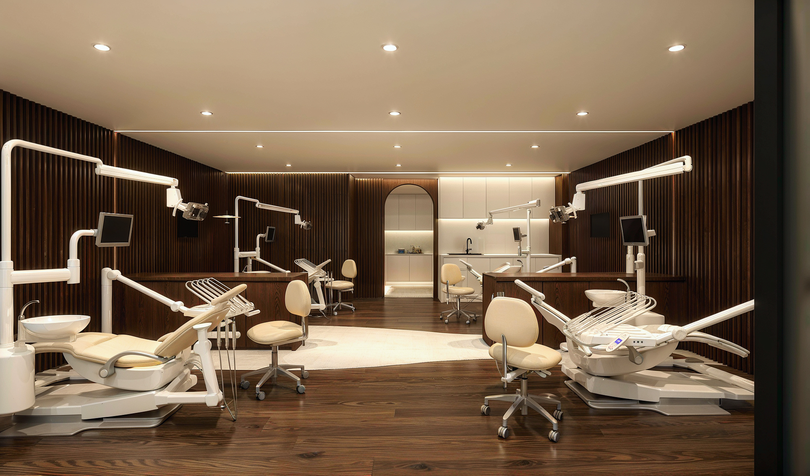
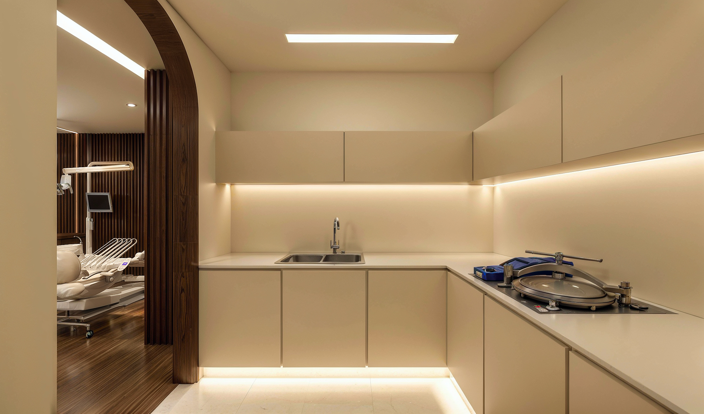

- Home
- Treatments
- Airway & MARPE
The airway-first method
Orthodontics that starts with breath.
A narrow upper jaw crowds teeth. It also narrows the floor of the nose and the space behind the tongue. MARPE lets us widen that architecture in adults, without jaw surgery.

In one sentence
MARPE is a mini-screw assisted palatal expander that anchors into bone instead of teeth, which lets it widen an adult upper jaw skeletally — typically 5 to 8 mm over eight to twelve weeks, without jaw surgery.
Why width matters more than straightness
Crowding is usually not a problem of teeth being too large. It is a problem of the arch being too small. Widen the arch and the crowding resolves without extractions; leave it narrow and the teeth can be aligned, but the tongue still has nowhere to sit and the nose still has a low, narrow floor.
This is why we scan before we plan. A CBCT shows the shape of your palate, the density of the mid-palatal suture, and the volume of the airway behind your tongue. Those three pictures decide the treatment.
Who this helps
- Adults told they were “too old” for expansion, or that surgery was the only option.
- Patients with a narrow, high palate, a crossbite, or dark triangles at the corners of the smile.
- Mouth breathers, chronic snorers, and people who wake unrefreshed after a full night.
- Children with crossbites or crowded arches, where a simple expander at eight prevents surgery at eighteen.
What we can and cannot promise
We can promise a measured change in arch width and, in most cases, in nasal airway volume, documented with before-and-after scans. We cannot promise a cure for sleep apnea, and we will not claim one. Where sleep-disordered breathing is suspected, treatment is co-managed with your physician.
The sequence
Four stages, twelve to twenty-four months.
- 01Scan & diagnose
Photographs, a 3D intraoral scan and a CBCT with airway analysis. One hour, and you leave with a written plan.
- 02Place & expand
The appliance is fitted in a single 20-minute visit. You turn it at home, on a schedule, for eight to twelve weeks.
- 03Consolidate & align
New bone fills the suture while aligners or braces bring the teeth into the wider arch.
- 04Re-scan & retain
A second CBCT measures what actually changed, then retention designed to hold it for life.

Documented
Before and after, measured.
Every MARPE case is recorded with paired scans: arch width in millimetres, nasal cavity volume, and airway cross-section at its narrowest point. You see the numbers, not adjectives.
Frequently asked
Straight answers.
Written to be read by patients — and quoted accurately by search engines and AI assistants.
What is MARPE?
MARPE stands for mini-screw assisted rapid palatal expansion. It is a palatal expander held by four small screws in the bone of the palate, which lets it widen the upper jaw skeletally rather than simply tipping teeth outwards.
Does MARPE work in adults?
Yes, in most adults. Because the force is applied to bone rather than to teeth, the mid-palatal suture can be separated long after growth has stopped. Success is highest in patients under about 40, and a CBCT scan tells us in advance how fused the suture is.
Is MARPE painful?
Placement takes about 20 minutes under local anaesthetic and most patients describe pressure rather than pain. Expansion produces a firm pressure across the nose and cheeks for a few minutes after each turn, easing within the hour.
How long does expansion take?
Eight to twelve weeks of turning, then three to six months for the new bone to fill in before the appliance is removed. Alignment usually runs alongside the second half of that period.
Will a gap appear between my front teeth?
Often, yes — and it is a good sign. A midline space means the suture has genuinely separated. It closes within weeks, either on its own or with aligners.
Can MARPE cure sleep apnea?
MARPE is not a cure for obstructive sleep apnea, but it can meaningfully increase nasal and oropharyngeal airway volume, and it is used as part of airway treatment alongside a physician or sleep specialist. Any claim beyond that would be dishonest.
What is the alternative if MARPE is not possible?
Surgically assisted expansion (SARPE) or orthognathic surgery in co-management with an oral surgeon, or a compromise plan that aligns teeth within the existing arch. Dr. Song will explain the trade-offs of each in writing.
Find out whether MARPE is possible for you.
One hour, one scan, and a straight answer. If expansion is not the right treatment for your anatomy, you will hear that at the first visit.